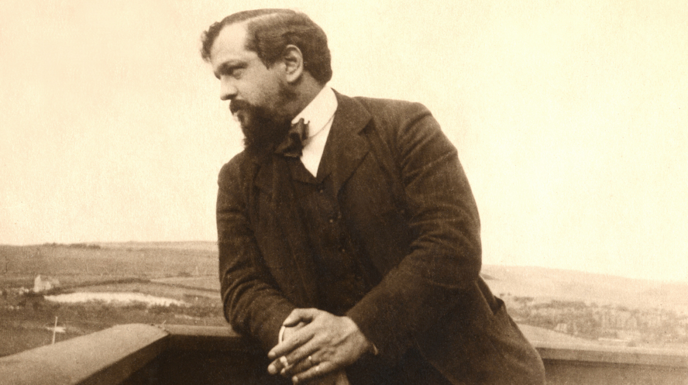

Claude Debussy fue un compositor francés del siglo XIX y principios del siglo XX. Nacido en 1862, Debussy es conocido por su innovador estilo musical, que se caracterizó por el uso de armonías y melodías complejas y atípicas, así como por su influencia en el movimiento impresionista de la época. Debussy comenzó a estudiar música a una edad temprana, y después de un breve período en el Conservatorio de París, comenzó a trabajar como pianista y compositor independiente. A lo largo de su carrera, Debussy compuso una amplia variedad de obras, incluyendo piezas para piano, música de cámara, óperas y ballets.
Sin embargo, es probablemente más conocido por su obra maestra "Clair de Lune", una pieza para piano que ha sido utilizada en una amplia variedad de medios, desde películas hasta anuncios publicitarios. Aunque Debussy murió relativamente joven en 1918 debido a un cáncer, su legado musical sigue siendo muy influyente. Su estilo innovador ha sido citado como una influencia importante en la música moderna y contemporánea, y su trabajo sigue siendo estudiado y admirado por músicos y aficionados por igual. En resumen, Claude Debussy fue un compositor francés influyente del siglo XIX y principios del siglo XX, conocido por su innovador estilo musical y su trabajo en el movimiento impresionista. Su obra maestra "Clair de Lune" sigue siendo una pieza icónica de la música clásica.
Su desarrollo musical fue lento y como estudiante fue lo suficientemente hábil como para presentar a sus profesores en el Conservatorio de París obras que se ajustaran a sus premisas conservadoras. Su amigo Georges Jean-Aubry comentó que Debussy «imitó admirablemente los giros melódicos de Massenet» en la cantata L'enfant prodigue (1884) que le valió el Prix de Rome. Una obra más característicamente debussiana de sus primeros años es La Damoiselle élue, que reformula la forma tradicional de los oratorios y las cantatas, utilizando una orquesta de cámara y un pequeño cuerpo de tono coral utilizando escalas y armonías nuevas o descuidadas desde hacía mucho tiempo. Sus primeras mélodies, inspiradas por Marie Vasnier, tienen un carácter más virtuoso que sus obras posteriores de este género, con una extensa vocalización sin palabras; a partir de las Ariettes oubliées (1885-1887), desarrolló un estilo más sobrio. Escribió sus propios poemas para las Proses lyriques (1892-1893), aunque, según el estudioso de la música Robert Orledge, «su talento literario no estaba a la altura de su imaginación musical».
El musicólogo francés Jacques-Gabriel Prod'homme escribió que tanto La Demoiselle élue, las Ariettes oubliées y los Cinq poèmes de Charles Baudelaire (1889) revelan «la nueva y extraña senda que el joven músico seguirá en el futuro». Newman coincidía: «Hay gran cantidad de Wagner, especialmente de Tristán, en el lenguaje. Pero la obra en su conjunto es característica, y la primera en la que captamos un indicio del Debussy que conoceríamos más adelante: el amante de los contornos vagos, de las semiluces, de las consonancias misteriosas y de las disonancias del color, el apóstol de la lánguida, el exclusivista en el pensamiento y en el estilo». A lo largo de los años siguientes, desarrolló su estilo personal sin, en esta etapa, romper radicalmente con las tradiciones musicales francesas. La mayor parte de su música de esta época es a pequeña escala, como Deux arabesques, Valse romantique, Suite bergamasque y la primera mélodie de Fêtes galantes. Newman señaló que, al igual que Chopin, el Debussy de esta época aparece como un liberador de los estilos germánicos de composición, ofreciendo en su lugar «un estilo exquisito y pelúcido» capaz de transmitir «no sólo alegría y capricho, sino también una emoción de carácter más profundo». En un estudio de 2004, Mark DeVoto considera que las primeras obras de Debussy no son armónicamente más audaces que la música que ya ofrecía Fauré; en un libro de 2007 sobre las obras para piano, Margery Halford observa que Deux arabesques (1888-1891) y «Rêverie» (1890) tienen «la fluidez y la calidez del estilo posterior de Debussy», pero que no son armónicamente innovadoras. Halford cita la popular «Claro de luna» (1890) de la Suite bergamasque como una obra de transición que apunta hacia el estilo maduro del compositor.
Tanto en su época como en la actualidad, los músicos coinciden en considerar Preludio a la siesta de un fauno (Prélude à l'après-midi d'un faune, 1894) como su primera obra maestra orquestal. Newman lo consideraba «totalmente original en su concepción, absolutamente personal en su estilo, y lógico y coherente de principio a fin, sin un compás o incluso una nota superflua»; Pierre Boulez afirmó: «La música moderna despertó con Prélude à l'après-midi d'un faune». La mayoría de las grandes obras por las que se le reconoce fueron escritas entre mediados de la década de 1890 y mediados de la de 1900, como Quatuor à cordes (1893), Peleas y Melisande (Pelléas et Mélisande, 1893-1902), Nocturnos (Nocturnes, 1899) y La mer (1903-1905). La suite Pour le piano (1894-1901) es, según Halford, uno de los primeros ejemplos de la madurez de Debussy como compositor para piano: «un hito importante ... y una expansión del uso de las sonoridades en el piano».
En los pizzicatos y la rítmica en cruz del scherzo de Quatuor à cordes (1893) se pueden apreciar las sonoridades de la música gamelán que el compositor había escuchado cuatro años; su biógrafo Edward Lockspeiser, consideró que este movimiento muestra el rechazo del compositor al «dictado tradicional de que los instrumentos de cuerda deben ser predominantemente líricos». La obra influyó a Ravel quien, en su propio Quatuor à cordes escrito diez años más tarde, muestra características notablemente debussianas. El académico y periodista Stephen Walsh califica Peleas y Melisande (iniciada en 1893, estrenada en 1902) como «una obra clave del siglo xx». El compositor Olivier Messiaen quedó fascinado por sus «extraordinarias cualidades armónicas y ... transparente textura instrumental». Esta ópera está compuesta en lo que el crítico y musicólogo británico Alan Blyth describe como un estilo recitativo sostenido y realzado, con líneas vocales «sensuales e íntimas». Influyó en compositores tan distintos como Stravinski y Puccini.
Orledge describe los Nocturnos como de textura excepcionalmente variada, «que va desde el inicio musorgskiano de “Nuages”, pasando por el cercano desfile de la banda de música en “Fêtes”, hasta el coro femenino sin palabras de “Sirènes”»; también considera el último movimiento un eco preliminar de las texturas marinas de La mer. Estampes para piano (1903) ofrece sensaciones de lugares exóticos, con ecos adicionales de gamelán en sus estructuras pentatónicas. Debussy creía que desde Beethoven la forma sinfónica tradicional se había convertido en una expresión formulista, repetitiva y obsoleta. La cíclica y en tres partes Sinfonía en re menor (1888) de Franck fue más de su agrado y se puede ver su influencia en La mer que, desde el punto de vista de Orledge, utiliza una forma cuasisinfónica, en la que sus tres secciones conforman un gigantesco movimiento en forma sonata con un tema cíclico al estilo de la de Franck. El movimiento central «Jeux de vagues» tiene la función de una sección de desarrollo sinfónico que conduce al «Dialogue du vent et de la mer» final, «un poderoso ensayo de color orquestal y sonoridad», según Orledge, que retoma temas del primer movimiento. Las opiniones estuvieron muy divididas. Algunos críticos consideraron el tratamiento menos sutil y menos misterioso que sus obras anteriores, e incluso como un paso atrás; otros elogiaron su «poder y encanto», su «extraordinario brío y fantasía brillante» y sus colores fuertes y líneas definidas.
De sus últimas obras orquestales, Images (1905-1912) es más conocida y representada que Jeux (1913). La primera sigue la estructura en tres partes ya utilizada en Nocturnes y La mer, pero se distingue por la utilización de melodías folclóricas tradicionales británicas y francesas, y por hacer que el movimiento central, «Ibéria», sea mucho más largo que los externos y por subdividirlo a su vez en tres partes, todas ellas inspiradas en escenas de la vida española. Aunque considera Images «la cima de la trayectoria de Debussy como compositor para orquesta», Trezise hace constar una opinión contraria de que el honor pertenece a la partitura del ballet Jeux. Este último fracasó como ballet debido a lo que Jann Pasler describe como un argumento banal, y la partitura fue ignorada durante algunos años. Algunos analistas actuales han encontrado en la obra un vínculo entre la continuidad tradicional y el desarrollo temático de la partitura y el deseo de crear una discontinuidad que se refleja en la música de finales del siglo xx. En esta pieza, Debussy abandonó la escala segunda mayor que había utilizado anteriormente en favor de la escala octatónica en lo que el estudioso de Debussy François Lesure describe como sus ambigüedades tonales.
Entre sus últimas obras para piano se encuentran los dos libros de Preludios (Préludes, 1909-10, 1911-13), piezas cortas de temática muy variada. Lesure comenta que van desde los festejos de los juglares en Eastbourne en 1905 y el acróbata americano «Général Lavine» «hasta las hojas muertas y los sonidos y olores del aire nocturno». En blanc et noir (1915), obra de tres movimientos para dos pianos, es una pieza predominantemente sombría, que refleja la guerra y el peligro nacional. Sobre Études (1915) hay disparidad de opiniones. En una reseña escrita poco después de la muerte del compositor, Newman encontró esta obra fatigosa: «un extraño último capítulo en la vida de un gran artista»; Ochenta años después, Lesure consideró que se encuentra entre las mejores obras tardías de Debussy: «Tras un exterior pedagógico, estas doce piezas exploran intervalos abstractos, o —en las últimas cinco— las sonoridades y timbres propios del piano». En 1914 Debussy empezó a trabajar en un conjunto planificado de seis sonatas para varios instrumentos. Su fatal enfermedad le impidió completar el trabajo, pero las de violonchelo y piano (1915), flauta, viola y arpa (1915), y violín y piano (1917, su última obra completada) son obras concisas, de tres movimientos, de naturaleza más diatónica que algunas de sus otras obras tardías.
El martirio de San Sebastián (Le Martyre de saint Sébastien, 1911), originalmente una obra musical de cinco actos sobre un texto de Gabriele D'Annunzio, que requería casi cinco horas de interpretación, no tuvo éxito, y en la actualidad es más habitual escucharla en una adaptación de concierto (o estudio) con narrador, o como una suite orquestal de «Fragments symphoniques». Debussy contó con la ayuda de André Caplet para orquestar y organizar la partitura. Dos obras tardías, los ballets Khamma (1912) y La Boîte à joujoux (1913), quedaron con la orquestación incompleta y fueron concluidas por Charles Koechlin y Caplet, respectivamente.
Pulsa este boton para volver a la pagina principal: